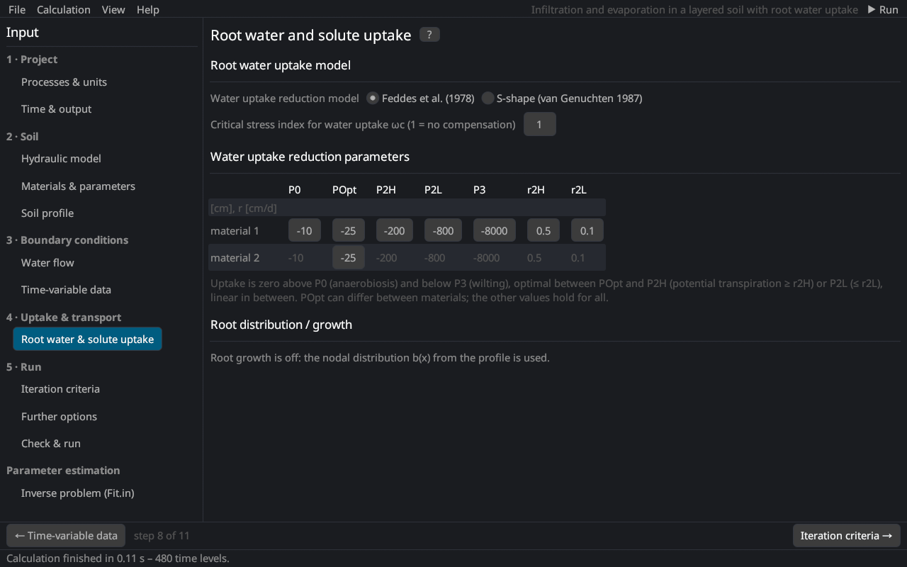

Input (pre-processing)
Root water and solute uptake
The page follows the Root Water and Solute Uptake Model dialog of HYDRUS-1D 4.17 together with the Root Growth parameters. The equations are in root water uptake and root solute uptake.


Root water uptake model
| Input | Description |
|---|---|
| Water uptake reduction model | Feddes et al. (1978) Feddes et al. (1978) or S-shape van Genuchten (1987) |
| Solute stress model | none, additive or multiplicative (threshold Maas and Hoffman (1977) or S-shape) |
| Critical stress index ωc | compensated uptake Jarvis (1989); Šimůnek and Hopmans (2009): 1 = no compensation, smaller values let unstressed roots compensate stressed ones |
Feddes parameters
| Parameter | Description |
|---|---|
| P0 | head above which no water is taken up (anaerobiosis) [L] |
| POpt | head below which the uptake is optimal; can differ between materials [L] |
| P2H, P2L | heads below which the uptake decreases, for a potential transpiration of r2H and r2L [L] |
| P3 | wilting point: no uptake below it [L] |
| r2H, r2L | potential transpiration rates of P2H and P2L [L/T] (0.5 and 0.1 cm/d) |
For the S-shape function: P50, the pressure head of 50 % uptake, and the exponent p.
Solute stress parameters
The osmotic coefficients (osmotic head per unit concentration) of each solute convert concentrations into the osmotic head. Multiplicative stress uses a threshold and a slope Maas (1990), or c50 and p of the S-shape.
Root solute uptake
| Input | Description |
|---|---|
| cRoot (per solute) | maximum concentration of passive uptake: passive uptake = water uptake × min(c, cRoot); 0 = no passive uptake |
| Active solute uptake | Michaelis–Menten uptake of one solute Šimůnek and Hopmans (2009) |
| Solute with active uptake | the solute taken up actively (HYDRUS 4.17) |
| Potential solute uptake rate | [M/L²/T]; with time-variable boundary conditions from the cBot column of this solute |
| Michaelis–Menten constant Km | [M/L³] |
| Minimum concentration for uptake | [M/L³] |
| Critical stress index for active uptake | compensation of the active uptake (1 = none) |
| Reduced potential solute uptake … | the potential active uptake is reduced with the water stress |
Root distribution and growth
Without root growth the nodal root distribution b(x) of the soil profile is used. With root growth:
| Option | Description |
|---|---|
| Rooting depth from atmospheric data | the xRoot column of the time-variable data |
| Table (time, depth) | interpolated from a table |
| Logistic (Verhulst–Pearl) | growth between sowing and harvest after the logistic function Šimůnek and Suarez (1993) with the initial root depth, the root depth at a known time, the maximum root depth and a period for repeated cycles |
See root growth for the equations.
Literature cited in this topic
- Feddes, R. A., P. J. Kowalik, and H. Zaradny (1978). Simulation of Field Water Use and Crop Yield. Simulation Monographs, Pudoc, Wageningen, 189 pp.
- Jarvis, N. J. (1989). A simple empirical model of root water uptake. Journal of Hydrology 107(1–4): 57–72.
- Maas, E. V. (1990). Crop salt tolerance. In: K. K. Tanji (ed.), Agricultural Salinity Assessment and Management, ASCE Manuals and Reports on Engineering Practice No. 71, American Society of Civil Engineers, New York, pp. 262–304.
- Maas, E. V., and G. J. Hoffman (1977). Crop salt tolerance – current assessment. Journal of the Irrigation and Drainage Division, ASCE 103(IR2): 115–134.
- van Genuchten, M. Th. (1987). A Numerical Model for Water and Solute Movement in and below the Root Zone. Research Report No. 121, U.S. Salinity Laboratory, USDA-ARS, Riverside, CA.
- Šimůnek, J., and D. L. Suarez (1993). Modeling of carbon dioxide transport and production in soil: 1. Model development. Water Resources Research 29(2): 487–497. doi:10.1029/92WR02225
- Šimůnek, J., and J. W. Hopmans (2009). Modeling compensated root water and nutrient uptake. Ecological Modelling 220(4): 505–521. doi:10.1016/j.ecolmodel.2008.11.004
All sources: References.